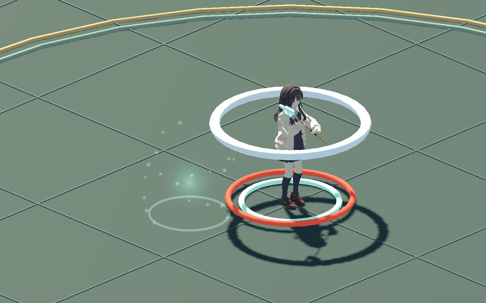
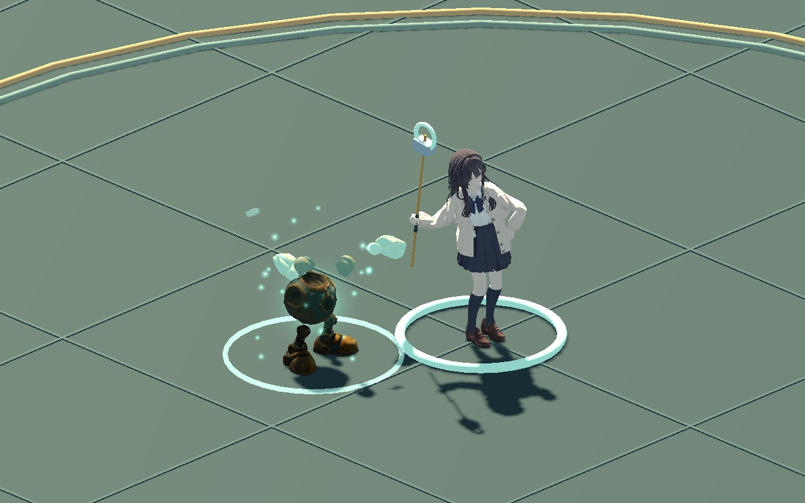
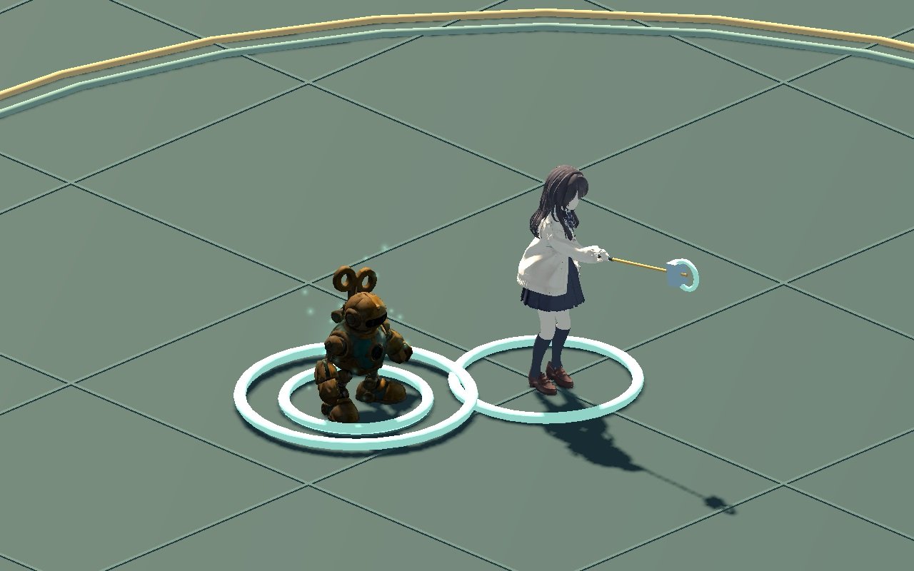
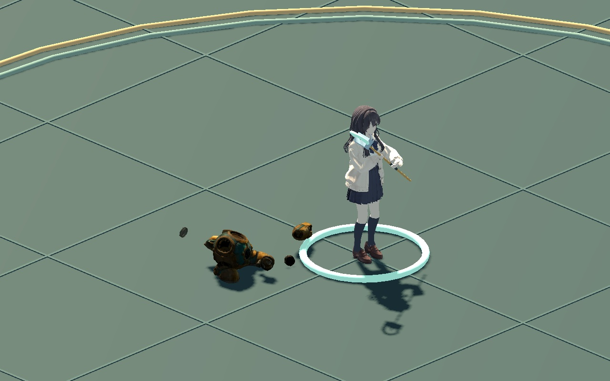

WITCH / AUTOMATON CAST 01
빛 속에서 조립되는 태엽인형
발과 몸통이 먼저 자리를 잡고, 팔·머리·태엽이 차례로 모입니다. 시전이 끊기면 그때까지 나타난 부품만 그 자리에서 무너집니다.
현재 시험판 연결13개 분할 부품성공 · 중도 취소 비교

게임에서는 기본 배치의 W로 시험할 수 있습니다. 기본 시전은 0.6초이며 기존 발동 시점인 0.51초에 조립이 끝납니다. 빠른 시전에서도 발동 시점에 맞춰 짧아집니다.
소환 위치와 대기 위치를 통일했습니다. 완성 직후 약 28cm 옆으로 밀리던 동작을 수정해, 주변에 적이 없으면 조립한 자리에 그대로 섭니다.
생성 → 조립 → 중단 시 붕괴

생성된 부품이 각 자리로 이동
완성 순간부터 실제 소환체로 행동
경직으로 끊기면 현재 자세에서 낙하작은 피격과 방패 막기는 시전을 유지합니다. 강한 피격 경직·사망·발동 실패 때는 조립을 중단합니다. 취소된 부품은 공격하거나 자폭하지 않습니다.
검증 및 작업 파일
실제 게임 시전과 경직을 실행해 7개 장면, 370프레임을 촬영했습니다. 실제 표시 크기와 확대 화면, 기본 속도와 FCR 40을 장면 목록에서 비교할 수 있습니다. 이 페이지는 무음이며 게임에서는 기존 기계음을 조립과 낙하에 사용합니다.
성공/취소, 마나·쿨다운, 약한 피격·막기·일시정지, 사망·대상 소멸·재시작·맵 교체, 재시전을 검사했습니다. 완성된 분리 표면은 기존 스킨 모델과 최대 약 0.0021mm 차이였습니다. 기존 피격·접근 시전·소환물 검사도 통과했습니다.
부품 낙하는 바닥 높이를 따르는 표시용 계산입니다. 부품끼리·벽과의 충돌을 해결하는 물리 시뮬레이션은 아닙니다.
검증과 파일 해시 · 수정 시작 파일